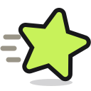

같은 북마크 10개,
네 가지
로 정리해 볼게요
A
B
C
D
A
새 폴더로
카테고리만 정하면, 폴더를 새로 만들어 나눠 담아요
B
기존 폴더로
지금 폴더는 그대로. 흩어진 북마크만 제자리로
C
쓰임새로
마지막으로 연 날짜로 나눠요. AI 없이 규칙만으로
D
프로젝트로
며칠 새 몰아서 저장한 북마크를 목적별로 묶어요
사흘 동안 3개 저장
Tidymark / Projects /
2026-09 · 리스본 여행

Tidymark
원하는 방식으로,
한 번에
적용하기 전에 미리 보고, 언제든 되돌릴 수 있어요